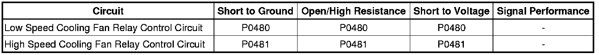

P0481
DTC P0480 or P0481 (4.6L (LH2 - Gas, 8 Cylinder, 4.6L, SFI, V8, DOHC, HO))
Diagnostic Instructions
* Perform the Diagnostic System Check - Vehicle (Initial Inspection and Diagnostic Overview) prior to using this diagnostic procedure.
* Review Strategy Based Diagnosis (Initial Inspection and Diagnostic Overview) for an overview of the diagnostic approach.
* Diagnostic Procedure Instructions (Initial Inspection and Diagnostic Overview)provide an overview of each diagnostic category.
DTC Descriptors
DTC P0480
- Cooling Fan Relay 1 Control Circuit
DTC P0481
- Cooling Fan Relay 2 Control Circuit
Diagnostic Fault Information

Circuit/System Description
The engine control module (ECM) commands the fans ON in high speed or low speed. In low speed, the fans are configured in series. In high speed, the fans are configured in parallel.
In low speed operation, the ECM applies ground to the coil side of the low speed relay, which is relay 1. Voltage is applied directly to the left cooling fan through the switch side of the low speed relay. The right fan is connected in series to the left fan through the de-energized series/parallel relay so that both fans operate at low speed.
In high speed operation, the ECM applies a ground to the coil side of the low speed relay, which is relay 1, the series/parallel relay, and the high speed relay, which is relay 2. Voltage is applied directly to the right cooling fan through the switch side of the high speed relay. The left cooling fan obtains voltage through the low speed relay and ground through the series/parallel relay.
When the ECM is commanding a fan relay ON, the voltage of the control circuit should be low, near 0 volts. When the ECM is commanding a fan relay OFF, the voltage of the control circuit should be high, near battery voltage.
A vehicle equipped with the trailer package option will get 2 puller and 2 pusher electric fans. During low speed operation, all 4 electric fans will operate at low speed. During high speed operation, all 4 electric fans will operate at high speed.
Conditions for Running the DTC
* The ignition is ON.
* The system voltage is between 9-18 volts.
* The relay control circuit is transitioned from OFF to ON or ON to OFF.
Conditions for Setting the DTC
P0480
The ECM detects an open circuit in the low speed cooling fan relay control circuit.
P0481
* The ECM detects an open circuit in the high speed cooling fan relay control circuit.
* The above condition is present for 30 seconds.
Action Taken When the DTC Sets
DTCs P0480 and P0481 are Type B DTCs.
Conditions for Clearing the DTC
DTCs P0480 and P0481 are Type B DTCs.
Reference Information
Schematic Reference
* Engine Cooling Schematics (Electrical Diagrams)
* Electrical Center Identification Views (Application and ID)
Connector End View Reference
Component Connector End Views (Connector Views)
Description and Operation
Cooling Fan Description and Operation (Description and Operation)
Electrical Information Reference
* Circuit Testing (Component Tests and General Diagnostics)
* Connector Repairs (Component Tests and General Diagnostics)
* Testing for Intermittent Conditions and Poor Connections (Component Tests and General Diagnostics)
* Wiring Repairs (Component Tests and General Diagnostics)
* Probing Electrical Connectors (Component Tests and General Diagnostics)
* Electrical Center Identification Views (Application and ID)
DTC Type Reference
Powertrain Diagnostic Trouble Code (DTC) Type Definitions (Diagnostic Trouble Code Descriptions)
Scan Tool Reference
Control Module References (Programming and Relearning)for scan tool information
Circuit/System Verification
Ignition ON, command each relay ON and OFF with a scan tool. Feel or listen to verify that each relay turns ON and OFF with each command.
Circuit/System Testing
1. Ignition OFF, disconnect the Fan S/P relay.
2. Connect a 30A fused jumper between the normally-open switch contact terminals R79 and R75 at the S/P fan relay connector in order to complete the fan ground circuit. Leave this jumper in place for the remainder of this procedure.
3. Ignition OFF, disconnect the affected relay.
4. Ignition ON, connect a test lamp between the positive terminal at the battery and the affected relay control circuit terminal listed below:
* Low speed fan relay terminal R69
* High speed fan relay terminal R82
5. Command the affected relay ON and OFF with a scan tool. The test lamp should turn ON and OFF when changing between the commanded states.
* Fan 1 relay commands the low speed fan relay
* Fan 2 and 3 relays command the high speed fan relay
• If the test lamp is always ON, test the relay control circuit for a short to ground. If the circuit tests normal, replace the ECM.
• If the test lamp is always OFF, test the relay control circuit for a short to voltage or an open/high resistance. If the circuit tests normal, replace the ECM.
6. Connect a 30A fused jumper between the positive voltage terminal at the battery and the fan voltage supply circuit terminal at the affected relay connector listed below and verify fan activation.
* Low speed fan relay terminal R70
* High speed fan relay terminal R83
• If the fan does not activate, test the fan voltage supply circuit for a short to ground or an open/high resistance. If the circuit tests normal, replace the fan.
7. Ignition ON, connect a 30A fused jumper between the relay switch voltage supply circuit terminal and the fan voltage supply circuit terminal at the affected relay connector listed below and verify fan activation.
* Low speed fan relay terminal R37 to R70
* High speed fan relay terminal R80 to R83
• If the fan does not activate, test the affected relay switch voltage supply circuit for a short to ground or an open/high resistance. If the circuit tests normal and its fuse is open, test all connected components and replace as necessary.
8. Ignition ON, verify that a test lamp illuminates between the affected relay coil voltage supply circuit terminal listed below and ground.
* Low speed fan relay terminal R68
* High speed fan relay terminal R81
• If the test lamp does not illuminate, test the affected relay coil voltage supply circuit for a short to ground or an open/high resistance. If the circuit tests normal and its fuse is open, test all connected components and replace as necessary.
9. If all circuits and the ECM test normal, replace the affected relay.
Repair Verification
Ignition ON, command each relay ON and OFF with a scan tool. Feel or listen to verify that each relay turns ON and OFF with each command.